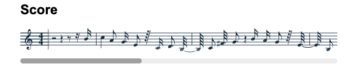
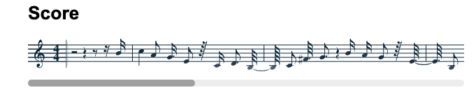

The study of visual aids to help memorize rhythmic patterns in jazz improvisation
Method
The goal of this exercise is for you to memorize a certain rhythmic pattern using audio and visual cues. In order to do this, there will be 3 steps:
-
Listen
You have to listen to a short excerpt for 90s or less and memorize the "rhythm of the melody" i.e the position of onsets of every note with respect to the backing track.
-
Establish baseline
You will tap out the rhythm of the melody with the track playing.
-
Reproduce the rhythm
Try to recreate the rhythm Now you will have to reproduce the rhythm as much as possible with only the backing track playing.
Types of Visualisation
There will be 2 types of visualizations in this experiment namely piano roll and score notation. 

Let's start!
Listening icon by Icons8
Wavy Line icon by Icons8
Tap Gesture icon by Icons8